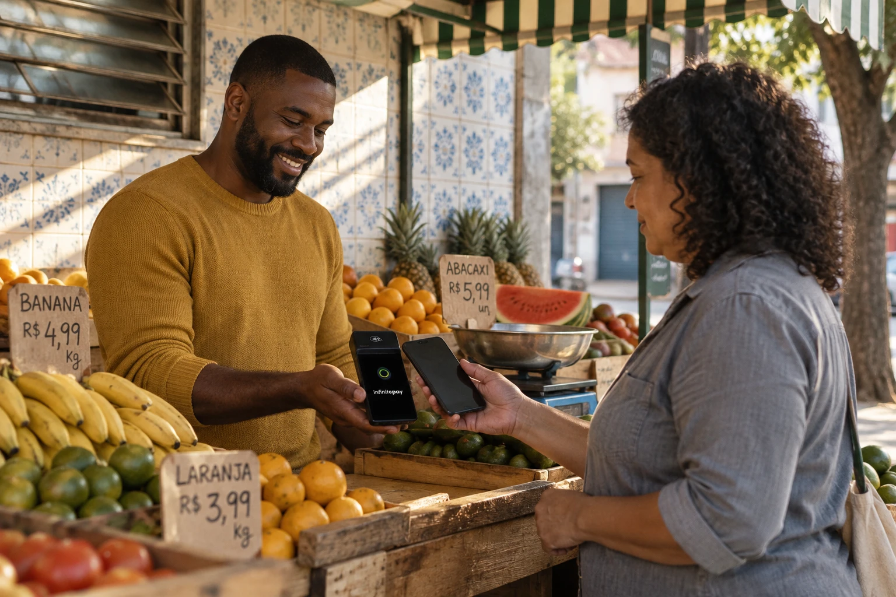

Pagamentos
Pix e cartão
Oferecem alternativas ao dinheiro em espécie e podem facilitar a compra. É importante conferir o recebimento no próprio aplicativo e observar taxas e custos.
Como ferramentas digitais podem ampliar as oportunidades de quem trabalha nas ruas, aproximar vendedores e clientes e transformar a maneira de vender.

Os vendedores ambulantes fazem parte da economia das cidades: oferecem produtos e serviços em locais movimentados, atendem diferentes públicos e representam uma fonte de renda para muitas famílias.
Apesar de sua importância, esses trabalhadores podem enfrentar renda instável, concorrência, dificuldades de acesso a crédito, infraestrutura limitada e obstáculos para formalizar o negócio.
A tecnologia não resolve todos esses problemas, mas pode oferecer ferramentas acessíveis para facilitar pagamentos, organizar informações, divulgar produtos e manter contato com os consumidores.
Objetivo: compreender como a tecnologia e as redes sociais podem apoiar o trabalho dos vendedores ambulantes e quais cuidados são necessários para que essa transformação seja inclusiva.

Ferramentas simples podem tornar algumas etapas da venda mais rápidas e organizadas. A escolha depende da realidade, dos custos e das necessidades de cada trabalhador.
Oferecem alternativas ao dinheiro em espécie e podem facilitar a compra. É importante conferir o recebimento no próprio aplicativo e observar taxas e custos.

Podem ajudar a anotar pedidos, controlar entradas e saídas, calcular despesas e manter uma lista de produtos e preços.

Fotos, listas de produtos e mensagens permitem apresentar opções antes da compra e responder dúvidas sem depender apenas do atendimento presencial.
WhatsApp, Instagram, Facebook e outras plataformas podem ajudar o vendedor a mostrar o que oferece, informar onde estará e criar relacionamento com clientes.

Fotografias bem iluminadas, descrições objetivas e informações atualizadas ajudam o cliente a entender o que está disponível.
Publicar onde a barraca estará e em quais horários pode facilitar que clientes encontrem o vendedor.
Responder com educação, ouvir sugestões e divulgar novidades ajuda a construir confiança e incentivar o retorno dos clientes.
A digitalização pode ampliar o alcance de um negócio, mas o acesso às ferramentas e a capacidade de usá-las variam de pessoa para pessoa.
O movimento pode mudar conforme o clima, a localização, a época do ano e as condições econômicas.
Internet, equipamentos, tarifas e manutenção podem pesar no orçamento de quem trabalha por conta própria.
É importante conhecer as regras locais de ocupação do espaço público e buscar informações sobre formalização.
Golpes, comprovantes falsos e exposição indevida de dados exigem atenção e hábitos seguros.

O futuro não depende apenas de novas tecnologias. Ele também envolve condições dignas de trabalho, acesso à informação e respeito à importância econômica e social desses profissionais.
Pagamentos eletrônicos, catálogos e redes sociais podem funcionar em conjunto com a venda presencial.
Ferramentas simples podem ajudar a entender os produtos mais procurados e planejar o estoque, sem expor informações pessoais.
Capacitação, acesso à internet e soluções de baixo custo podem ampliar as oportunidades para diferentes trabalhadores.
O comércio ambulante tem relevância econômica e social. Pix, máquinas de cartão, celulares e redes sociais podem facilitar tarefas, ampliar a divulgação e aproximar vendedores e consumidores. Porém, seus benefícios dependem do acesso, da segurança e do uso consciente dessas ferramentas.
Investir em capacitação e criar oportunidades de inclusão digital pode ajudar os vendedores ambulantes a acompanhar as mudanças sem perder o valor do atendimento humano, da experiência e da relação de confiança com os clientes.
Materiais indicados para aprofundar a pesquisa. Os links abrem em uma nova aba.
Imagens ilustrativas: Unsplash. O conteúdo deste site é uma síntese informativa elaborada a partir do tema da pesquisa e das referências listadas.